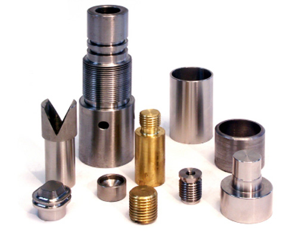

Född ur glasbruket – byggd för hela verkstadsindustrin.
Verkstaden har sina rötter i Surte Glasbruk. När bruket stängde 1983 tog några av de anställda över formverkstaden och har drivit den vidare i egen regi sedan dess.
Verktyg till glasindustrin är fortfarande kärnan. Samtidigt tar vi gärna emot uppdrag från andra branscher som behöver bearbetade detaljer – och skulle något ligga utanför vår egen maskinpark löser vi det tillsammans med våra samarbetspartners.
Formar och verktyg för glasbruk och glasförädling
Legobearbetning åt övrig tillverkningsindustri
Ägarledd verkstad där alla delägare är engagerade i verksamheten
En komplett mekanisk verkstad under ett och samma tak.
Från råmaterial till färdig, rengjord detalj. Här är det vi gör i vår egen verkstad – hela listan hittar du på tjänstesidan.
01
CNC-bearbetning
Svarvning och fräsning i CNC-styrda maskiner, med egen programmering.
CNC-svarv 2 axlar
CNC-fräs 3 + 1 axlar
Programmering
02
Manuell bearbetning
För enstaka detaljer och moment där erfarna händer gör jobbet bäst.
Manuell svarv
Borrning
Kapning
Kilspår & splints
03
Svetsning
Svetsning i flera metoder – även av gjutjärn, som kräver extra kunnande.
TIG
MIG
MMA
Gjutjärn
04
Termisk sprutning
Påläggning av skyddande skikt på ytor, med flera olika sprutmetoder.
Varm
Kall
Keramisk
05
Värmebehandling
Värmebehandling av detaljer i vår egen ugn – upp till 1 200 °C.
Max 1 200 °C
Egen ugn
06
Ytbehandling & efterarbete
Vi gör detaljen klar för leverans – putsad, polerad, tvättad och monterad.
Glasblästring
Polering
Trumling
Pressning
Ultraljudstvätt
Montering
Material
Vi bearbetar de vanligaste materialen – och lite till.
Oavsett om det gäller hårda superlegeringar eller plast har vi maskiner och erfarenhet för att få till detaljen.
Stål
Rostfritt
Brons
Järn
Aluminium
Aluminiumbrons
Gjutjärn
Inconel
Glasfiber
Plast
med mera

Därför väljer kunder oss
Snabba, säkra leveranser – och lösningar för just ditt behov.
Varje kund har sina egna krav, och att ta fram skräddarsydda lösningar är vardag för oss. Vi lägger stor vikt vid att leverera i tid och med rätt kvalitet, gång på gång.
Snabba och pålitliga leveranser är vår specialitet
Unika lösningar anpassade efter varje kund
Brett nätverk av partners för vattenskärning, bockning, 5-axlig fräsning och mer